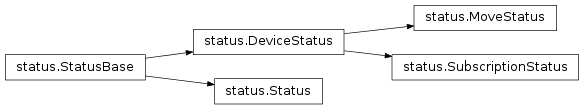

Status objects (Futures)¶
Ophyd Status objects signal when some potentially-lengthy action is complete.
The action may be moving a motor, acquiring an image, or waiting for a
temperature controller to reach a setpoint. From a general software engineering
point of view, they are like concurrent.futures.Future objects in the
Python standard library but with some semantics specific to controlling
physical hardware.
The lifecycle of a Status object is:
- A Status object is created with an associated timeout. The timeout clock starts.
- The recipient of the Status object may add callbacks that will be notified when the Status object completes.
- The Status object is marked as completed successfully, or marked as completed with an error, or the timeout is reached, whichever happens first. The callbacks are called in any case.
Creation and Marking Completion¶
A timeout, given in seconds, is optional but strongly recommended. (The
default, None means it will wait forever to be marked completed.)
from ophyd import Status
status = Status(timeout=60)
Additionally, it accepts a settle_time, an extra delay which will be added
between the control system reporting successful completion and the Status being
marked as finished. This is also given in seconds. It is 0 by default.
status = Status(timeout=60, settle_time=10)
The status should be notified by the control system, typically from another
thread or task, when some action is complete. To mark success, call
set_finished. To mark failure, call
set_exception, passing it an Exception giving
information about the cause of failure.
As a toy example, we could hook it up to a threading.Timer that marks it
as succeeded or failed based on a coin flip.
import random
import threading
def mark_done():
if random.random() > 0.5: # coin flip
status.set_finished() # success
else:
error = Exception("Bad luck")
status.set_exception(error) # failure
# Run mark_done 5 seconds from now in a thread.
threading.Timer(5, mark_done).start()
See the tutorials for more realistic examples involving integration with an actual control system.
Changed in version v1.5.0: In previous versions of ophyd, the Status objects were marked as completed
by calling status._finished(success=True) or
status._finished(success=False). This is still supported but the new
methods status.set_finished() and status.set_exception(...) are
recommended because they can provide more information about the cause of
failure, and they match the Python standard library’s
concurrent.futures.Future interface.
Notification of Completion¶
The recipient of the Status object can request synchronous or asynchronous
notification of completion. To wait synchronously, the wait
will block until the Status is marked as complete or a timeout has expired.
status.wait() # Wait forever for the Status to finish or time out.
status.wait(10) # Wait for at most 10 seconds.
If and when the Status completes successfully, this will return None. If
the Status is marked as failed, the exception (e.g. Exception("Bad luck")
in our example above) will be raised. If the Status’ own timeout has expired,
StatusTimeoutError will be raised. If a timeout given to
wait expires before any of these things happen,
WaitTimeoutError will be raised.
The method exception behaves similarly to
wait; the only difference is that if the Status is marked as
failed or the Status’ own timeout expires it returns the exception rather
than raising it. Both return None if the Status finishes successfully,
and both raise WaitTimeoutError if the given timeout expires
before the Status completes or times out.
Alternatively, the recipient of the Status object can ask to be notified of completion asynchronously by adding a callback. The callback will be called when the Status is marked as complete or its timeout has expired. (If no timeout was given, the callback might never be called. This is why providing a timeout is strongly recommended.)
def callback(status):
print(f"{status} is done")
status.add_callback(callback)
Callbacks may be added at any time. Until the Status completes, it holds a hard
reference to each callback in a list, status.callbacks. The list is cleared
when the callback completes. Any callbacks added to a Status object after
completion will be called immediately, and no reference will be held.
Each callback is passed to the Status object as an argument, and it can use this to distinguish success from failure.
def callback(status):
error = status.exception()
if error is None:
print(f"{status} has completed successfully.")
else:
print(f"{status} has failed with error {error}.")
SubscriptionStatus¶
The SubscriptionStatus is a special Status object that
correctly and succinctly handles a common use case, wherein the Status object
is marked finished based on some ophyd event. It reduces this:
from ophyd import Device, Component, DeviceStatus
class MyToyDetector(Device):
...
# When set to 1, acquires, and then goes back to 0.
acquire = Component(...)
def trigger(self):
def check_value(old_value, value, **kwargs):
"Mark status as finished when the acquisition is complete."
if old_value == 1 and value == 0:
status.set_finished()
# Clear the subscription.
sself.acquire.clear_sub(check_value)
status = DeviceStatus(self.acquire)
self.acquire.subscribe(check_value)
self.acquire.set(1)
return status
to this:
from ophyd import Device, Component, SubscriptionStatus
class MyToyDetector(Device):
...
# When set to 1, acquires, and then goes back to 0.
acquire = Component(...)
def trigger(self):
def check_value(old_value, value, **kwargs):
"Return True when the acquisition is complete, False otherwise."
return (old_value == 1 and value == 0)
status = SubscriptionStatus(self.acquire, check_value)
self.acquire.set(1)
return status
Note that set_finished, subscribe and clear_sub are gone; they are
handled automatically, internally. See
SubscriptionStatus for additional options.
Partial Progress Updates¶
Some Status objects provide an additional method named watch, as in
watch(), which can be used to subscribe to
incremental progress updates suitable for building progress bars. See
Progress Bar for one application of this feature.
The watch method accepts a callback which must accept the following
parameters as optional keyword arguments:
namecurrentinitialtargetunitprecisionfractiontime_elapsedtime_remaining
The callback may receive a subset of these depending on how much we can know
about the progress of a particular action. In the case of
ophyd.status.MoveStatus and
ophyd.areadetector.trigger_mixins.ADTriggerStatus, we know a lot, from
which one can build a frequently-updating progress bar with a realistic
estimated time of completion. In the case of a generic
ophyd.status.DeviceStatus, we only know the name of the assocated
Device, when the action starts, and when the action ends.
Status API details¶
-
class
ophyd.status.StatusBase(*, timeout=None, settle_time=0, done=None, success=None)¶ Track the status of a potentially-lengthy action like moving or triggering.
Parameters: - timeout: float, optional
The amount of time to wait before marking the Status as failed. If
None(default) wait forever. It is strongly encouraged to set a finite timeout. If settle_time below is set, that time is added to the effective timeout.- settle_time: float, optional
The amount of time to wait between the caller specifying that the status has completed to running callbacks. Default is 0.
Notes
Theory of operation:
This employs two
threading.Eventobjects, one thread the runs for (timeout + settle_time) seconds, and one thread that runs for settle_time seconds (if settle_time is nonzero).At __init__ time, a timeout and settle_time are specified. A thread is started, on which user callbacks, registered after __init__ time via
add_callback(), will eventually be run. The thread waits on an Event be set or (timeout + settle_time) seconds to pass, whichever happens first.If (timeout + settle_time) expires and the Event has not been set, an internal Exception is set to
StatusTimeoutError, and a second Event is set, marking the Status as done and failed. The callbacks are run.If a callback is registered after the Status is done, it will be run immediately.
If the first Event is set before (timeout + settle_time) expires, then the second Event is set and no internal Exception is set, marking the Status as done and successful. The callbacks are run.
There are two methods that directly set the first Event. One, :meth:set_exception, sets it directly after setting the internal Exception. The other,
set_finished(), starts athreading.Timerthat will set it after a delay (the settle_time). One of these methods may be called, and at most once. If one is called twice or if both are called,InvalidStateis raised. If they are called too late to prevent aStatusTimeoutError, they are ignored but one call is still allowed. Thus, an external callback, e.g. pyepics, may reports success or failure after the Status object has expired, but to no effect because the callbacks have already been called and the program has moved on.-
add_callback(self, callback)¶ Register a callback to be called once when the Status finishes.
The callback will be called exactly once. If the Status is finished before a callback is added, it will be called immediately. This is threadsafe.
The callback will be called regardless of success of failure. The callback has access to this status object, so it can distinguish success or failure by inspecting the object.
Parameters: - callback: callable
Expected signature:
callback(status).The signature
callback()is also supported for backward-compatibility but will issue warnings. Support will be removed in a future release of ophyd.
-
callbacks¶ Callbacks to be run when the status is marked as finished
-
done¶ Boolean indicating whether associated operation has completed.
This is set to True at __init__ time or by calling
set_finished(),set_exception(), or (deprecated)_finished(). Once True, it can never become False.
-
exception(self, timeout=None)¶ Return the exception raised by the action.
If the action has completed successfully, return
None. If it has finished in error, return the exception.Parameters: - timeout: Union[Number, None], optional
If None (default) wait indefinitely until the status finishes.
Raises: - WaitTimeoutError
If the status has not completed within
timeout(starting from when this method was called, not from the beginning of the action).
-
set_exception(self, exc)¶ Mark as finished but failed with the given Exception.
This method should generally not be called by the recipient of this Status object, but only by the object that created and returned it.
Parameters: - exc: Exception
-
set_finished(self)¶ Mark as finished successfully.
This method should generally not be called by the recipient of this Status object, but only by the object that created and returned it.
-
settle_time¶ A delay between when
set_finished()is when the Status is done.This is set when the Status is created, and it cannot be changed.
-
success¶ Boolean indicating whether associated operation has completed.
This is set to True at __init__ time or by calling
set_finished(),set_exception(), or (deprecated)_finished(). Once True, it can never become False.
-
timeout¶ The timeout for this action.
This is set when the Status is created, and it cannot be changed.
-
wait(self, timeout=None)¶ Block until the action completes.
When the action has finished succesfully, return
None. If the action has failed, raise the exception.Parameters: - timeout: Union[Number, None], optional
If None (default) wait indefinitely until the status finishes.
Raises: - WaitTimeoutError
If the status has not completed within
timeout(starting from when this method was called, not from the beginning of the action).- StatusTimeoutError
If the status has failed because the timeout that it was initialized with has expired.
- Exception
This is
status.exception(), raised if the status has finished with an error. This may includeTimeoutError, which indicates that the action itself raisedTimeoutError, distinct fromWaitTimeoutErrorabove.
In addition we provide specialized subclasses that know more about the object they are tied to.
-
class
ophyd.status.Status(obj=None, timeout=None, settle_time=0, done=None, success=None)¶ Track the status of a potentially-lengthy action like moving or triggering.
This has room for an option
objparameter, noting the object associated with action. Status does not use this internally, but it can be useful for external code to keep track of things.Parameters: - timeout: float, optional
The amount of time to wait before marking the Status as failed. If
None(default) wait forever. It is strongly encouraged to set a finite timeout. If settle_time below is set, that time is added to the effective timeout.- settle_time: float, optional
The amount of time to wait between the caller specifying that the status has completed to running callbacks. Default is 0.
Attributes: - obj : any or None
The object
-
class
ophyd.status.DeviceStatus(device, **kwargs)¶ Track the status of a potentially-lengthy action like moving or triggering.
This adds the notion of a Device and minimal support for progress bars. (They only get notified of the Device name and the time of completion.) See MoveStatus for a richer implementation of progress bars.
Parameters: - timeout: float, optional
The amount of time to wait before marking the Status as failed. If
None(default) wait forever. It is strongly encouraged to set a finite timeout. If settle_time below is set, that time is added to the effective timeout.- settle_time: float, optional
The amount of time to wait between the caller specifying that the status has completed to running callbacks. Default is 0.
-
watch(self, func)¶ Subscribe to notifications about partial progress.
-
class
ophyd.status.MoveStatus(positioner, target, *, start_ts=None, **kwargs)¶ Track the state of a movement from some initial to final “position”.
The position could a physical position, a “position” in a pseudo-space, a temperature, etc. This constraint allows richer support for progress bars, including progress updates and an ETA.
Parameters: - positioner : Positioner
- target : float or array-like
Target position
- done : bool, optional
Whether or not the motion has already completed
- success : bool, optional
If motion has already completed, the status of that motion
- start_ts : float, optional
The motion start timestamp
- timeout : float, optional
The default timeout to use for a blocking wait, and the amount of time to wait to mark the motion as failed
- settle_time : float, optional
The amount of time to wait between motion completion and running callbacks
Attributes: - pos : Positioner
- target : float or array-like
Target position
done: boolBoolean indicating whether associated operation has completed.
- start_ts : float
The motion start timestamp
- finish_ts : float
The motion completd timestamp
- finish_pos : float or ndarray
The final position
success: boolBoolean indicating whether associated operation has completed.
-
elapsed¶ Elapsed time
-
error¶ Error between target position and current* position
- If motion is already complete, the final position is used
-
watch(self, func)¶ Subscribe to notifications about partial progress.
This is useful for progress bars.
Parameters: - func : callable
Expected to accept the keyword aruments:
namecurrentinitialtargetunitprecisionfractiontime_elapsedtime_remaining
-
class
ophyd.areadetector.trigger_mixins.ADTriggerStatus(*args, **kwargs)¶ A Status for AreaDetector triggers
A special status object that notifies watches (progress bars) based on comparing device.cam.array_counter to device.cam.num_images.
-
class
ophyd.status.SubscriptionStatus(device, callback, event_type=None, timeout=None, settle_time=None, run=True)¶ Status updated via ophyd events
Parameters: - device : obj
- callback : callable
Callback that takes event information and returns a boolean. Signature should be f(*args, **kwargs)
- event_type : str, optional
Name of event type to check whether the device has finished succesfully
- timeout : float, optional
Maximum timeout to wait to mark the request as a failure
- settle_time : float, optional
Time to wait after completion until running callbacks
- run: bool, optional
Run the callback now
-
check_value(self, *args, **kwargs)¶ Update the status object
-
set_finished(self)¶ Mark as finished successfully.
This method should generally not be called by the recipient of this Status object, but only by the object that created and returned it.
-
ophyd.status.wait(status, timeout=None, *, poll_rate='DEPRECATED')¶ (Blocking) wait for the status object to complete
Parameters: - status: StatusBase
A Status object
- timeout: Union[Number, None], optional
Amount of time in seconds to wait. None disables, such that wait() will only return when either the status completes or if interrupted by the user.
- poll_rate: “DEPRECATED”
DEPRECATED. Has no effect because this does not poll.
Raises: - WaitTimeoutError
If the status has not completed within
timeout(starting from when this method was called, not from the beginning of the action).- Exception
This is
status.exception(), raised if the status has finished with an error. This may includeTimeoutError, which indicates that the action itself raisedTimeoutError, distinct fromWaitTimeoutErrorabove.